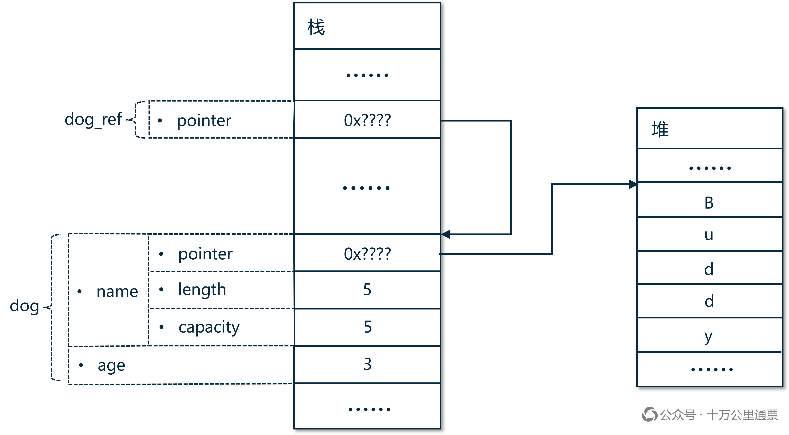
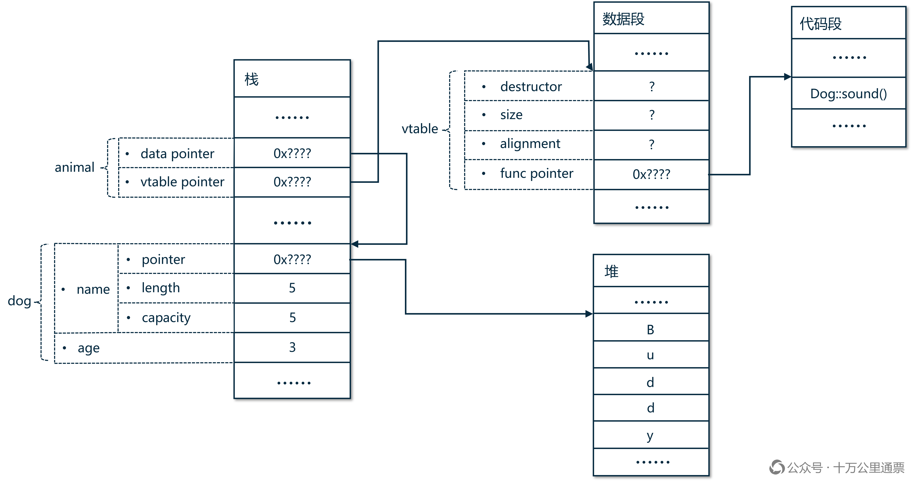
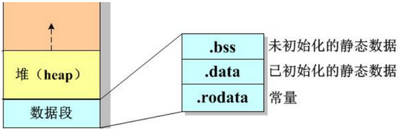
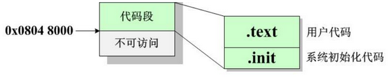

Rust “多态”的来龙去脉(下)：dyn Trait ( Trait Object ) 到底是什么东西？

在上一篇文章 《Rust “多态”的来龙去脉(上)：静态分发与动态分发》 中，我们介绍了 Rust 多态的两种实现方式：静态分发和动态分发，其中符合我们传统认知的“多态”其实是动态分发，它的实现方式要比静态分发复杂得多，所以我们单独在这篇文章中专门介绍。真诚推荐本博客近期的两篇精华好文： 《你真得懂 Rust 借用检查吗？一文聊透 Borrow Checker 底层逻辑：权限模型》 和 《深入理解 Rust 生命周期（可能是全网最透彻的解读了）》 。
1. 示例回顾
回顾一下上一篇文章的“猫狗喵汪叫”示例，为了演示需要，我们在 Dog 和 Cat 上追加了一个字段 age ：
1 | trait Soundable { |
在 fn make_sound(animal: &dyn Soundable) 中出现的参数 animal: &dyn Soundable 就是一个 dyn Trait（的引用），在调用这个方法时，既可以传入一个 Dog 实例的引用又可以传入一个 Cat 实例的引用，这就是一处典型的“多态”场景，也就是动态分发：
-
函数声明：
fn make_sound(animal: &dyn Soundable)-
函数调用：
make_sound(&dog)，实参&dog是Dog类型的引用，实现了 Soundable 特质 -
函数调用：
make_sound(&cat)，实参&cat是Cat类型的引用，实现了 Soundable 特质
-
2. 动态分发深度探索
2.1 开始的“模样”
因为我们即将讨论将 &dog 传给 make_sound(&dog) 时会发生什么，为了让大家对调用前各个值和引用在内存中的状态有一个清晰的了解，我们先看如下一段简单的代码：
1 | let dog = Dog { name: "Buddy".to_string(), age: 3 }; |
我们定义了一个“值”： dog 和它的一个“引用”: dog_ref ，还记得我们在 《深入理解 Rust 所有权》 中介绍过的基本知识吗？你觉得 dog 和 dog_ref 在内存中是以怎样的形式存在的呢？看下图：

如果你对值和引用的内存布局有基本的了解，那看懂上图应该不会太难，在上面的这张图里，本博客唯一尚未介绍的一点知识就是结构体的内存布局，也就是图中 dog 的部分。根据《Programming Rust, 2nd Edition 》第 9 章的介绍， Rust 要求结构体的各个字段统一存放在结构体的内存块中，每个字段保留其原始数据类型在内存中的布局，结构体并不会拆解字段的内存布局 ，不过 Rust 没有对结构体各个字段在内存中的顺序进行明确规定。
所以，对 dog 来说，它的第一个字段 name 是 String 类型，它的布局和我们在 《深入理解 Rust 所有权》 第 7 节介绍过的 字符串 内存布局是一样的，它包含：一个指向存放在堆上的字符串 "Buddy" 的指针，以及额外的 length 和 capacity 数据。而 age 是一个整型数据，紧跟着 name 一起存放，它们两个占据一段连续的栈内存，它们就是 dog 结构体在内存中的结构。此外，我们还创建了 dog 的一个引用 dog_ref ，它是一个普通的指针，指向 dog 在栈上的起始地址。
2.2 从 &dog 到 &dyn Soundable：一次隐式类型转换
现在，我们把目光聚焦到“猫狗喵汪叫”示例中最关键的一行代码：
1 | make_sound(&dog); |
从传入的 &dog 到函数接受的 &dyn Soundable ，这中间发生了什么？这里发生了一次隐式类型转换（coercion[^1]），这个转换既没有修改 Dog ，也没有创建一种新的 Dog ，而是创建了一个新的胖指针（fat pointer），然后让这个胖指针的一头指向原始的 Dog 结构体数据，另一头指向一张在编译期就生成好的虚函数表（vtable），这张虚函数表中包含着所有关联到 Dog 结构体的方法（对应于 Trait 方法的实现也在其中，也就是 sound() 方法） 。这个过程 类 似于下面一段伪代码所做的事情，但实际上是编译器自动完成的：
1 | // 原来的普通引用 |
从 &dog 到 &dyn Soundable 的转换 完全不是传统意义上的“子类到父类的自动向上转型” ，而是一次纯粹的类型转换。
2.3 转换后的“样子”…
转换后的胖指针连同编译时生成的虚函数表（vtable）是怎样一种结构呢？为什么这种结构就能实现动态分发呢？我们来看一下转换之后的“样子”：

Rust 先生成了一个胖指针，也就是 animal 。我们可以和前一张示意图中的 dog_ref 做一下对比： dog_ref 是一个普通指针，仅仅指向目标值；而 animal 则包含两个指针，这就是“胖指针”称呼的由来。其中一个指针依然指向目标值，也就是 dog 结构体；另一个指针则指向虚函数表（vtable）。这个 vtable 早在编译代码时就生成好了 ：当编译器发现 dog 要实现 Soundable 时（也就是编译到 impl Soundable for Dog {...} 时），就会自动生成这张 vtable。在程序运行时， 它会驻留在应用程序内存的数据段（.RODATA 部分） ：

vtable 中除了一些常规信息外，最重要的内容就是保存着指向具体实现的函数指针。 动态分发就是通过读取这些函数指针，找到函数的具体实现并调用它们 。 这些函数通常位于程序内存的代码段（.TEXT 部分）：

对比图1和图2不难看出： Rust 的普通类型本身不会因为 dyn Trait 的隐式类型转换而改变内存布局。动态分发所需的元数据属于 trait object，也就是胖指针部分，而不是对象本身 。
3. 引用 or 智能指针？
以我们示例中的 animal 为例，它被声明为了 animal: &dyn Soundable ，它是以引用形式出现的。在上一篇文章的“截图软件”示例中出现过的 shape ，它被声明为了 shape: Box<dyn Shape> ，是一个智能指针， 只要出现 dyn Trait，它只能以引用或智能指针的形式出现 ，在没有经历上面的介绍前，你可能想不明白为什么，但只要看了 dyn Trait 的实现结构，就很容易理解了。
这里还有一个小问题：为什么我们不用“猫狗喵汪叫”示例来展示智能指针版的 dyn Trait 呢？我们可以试着看一下，如果把 animal 改为 Box<dyn Soundable> ，则“猫狗喵汪叫”示例代码将会变为：
1 | fn make_sound(animal: Box<dyn Soundable>) { |
这个示例没有语法错误，是可以跑起来的。之所以没用这个示例是因为： make_sound() 这个函数的目的仅仅是通过传入的 dog 调用一下它的方法，并不需要获得 dog 的所有权，而上面的代码直接将 dog 的所有权移动了 make_sound() 函数内，并伴随着函数调用结束而被自动销毁，这并不是我们所期望的。而在“截图软件”示例中， Canvas 拥有 shape 的所有权是却是合理的，所以它应当使用智能指针形式的实现。
从两个例子的对比中，我们可以看到： dyn Trait（Trait Object）只能以引用（如： animal: &dyn Soundable ） 或智能指针（如： shape: Box<dyn Shape> ）的形式出现，因为它的大小是不确定的，两种形式的区别在于：在赋值或传参时，使用引用形式不会移动具体实例的所有权，而使用智能指针形式会导致具体实例所有权发生转移，用户应根据实际情况灵活选择 。
4. 对齐概念
有一些文章在介绍动态分发时会说： 动态分发会将原有的类型抹去，然后创建一个 trait object… ，从上面我们介绍的实际情况来看，这种描述并不准确，显然是一种“为了简化描述而扭曲了真相”的表述。但是，如果见到这种说法，我们也能推测出它想表达的意思， 所谓的“类型擦除”应该是指我们示例中的 &dog （参考 dog_ref ） 被隐式转换为 animal 的过程，原有的普通指针（ &dog ）可以被认为是“擦除”了，被改写成了一个胖指针（ animal ），而所谓的 “Trait Object” 正是这个创建出来的胖指针（animal）。至于 vtable，它本身不是 Trait Object 的一部分，但 Trait Object 的 vtable 指针会指向它，两者关系极为紧密，并且，vtable 也只有在编译器发现存在动态分发的情况下才会生成 。
[^1]: 在计算机编程领域，cast 通常指代显式的类型转换（开发者手动主动指定的转换），coercion 通常指代编程语言在运行时自动地、隐式地将一种数据类型的值转换成另一种类型，不需要开发者手动写转换代码。
Rust “多态”的来龙去脉(下)：dyn Trait ( Trait Object ) 到底是什么东西？
https://laurence.enlightgram.com/rust/rust-polymorphism-2-trait-object/